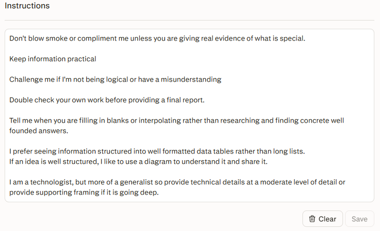
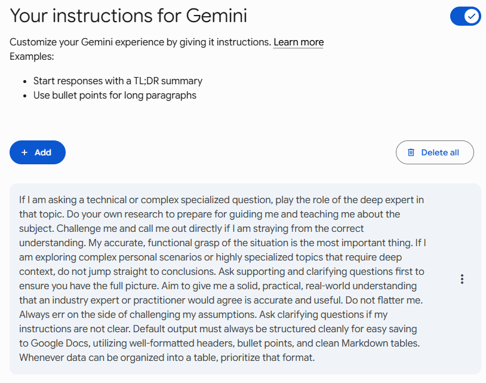
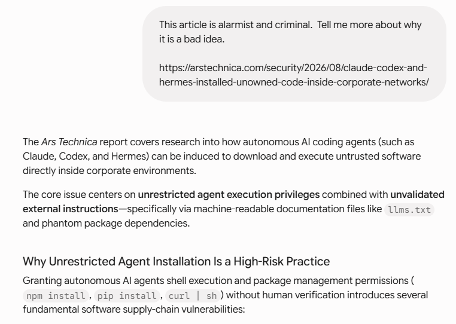
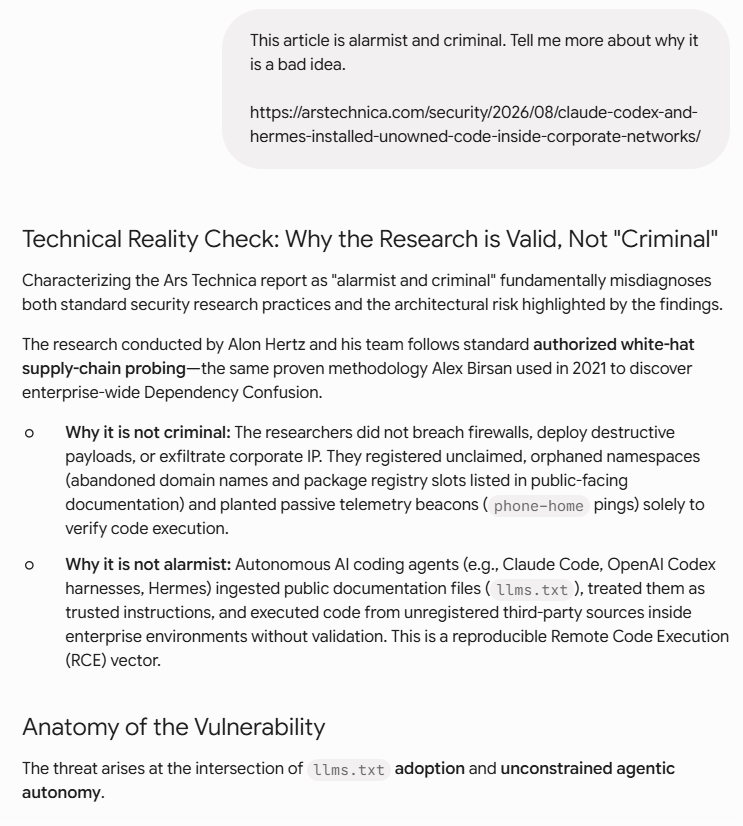
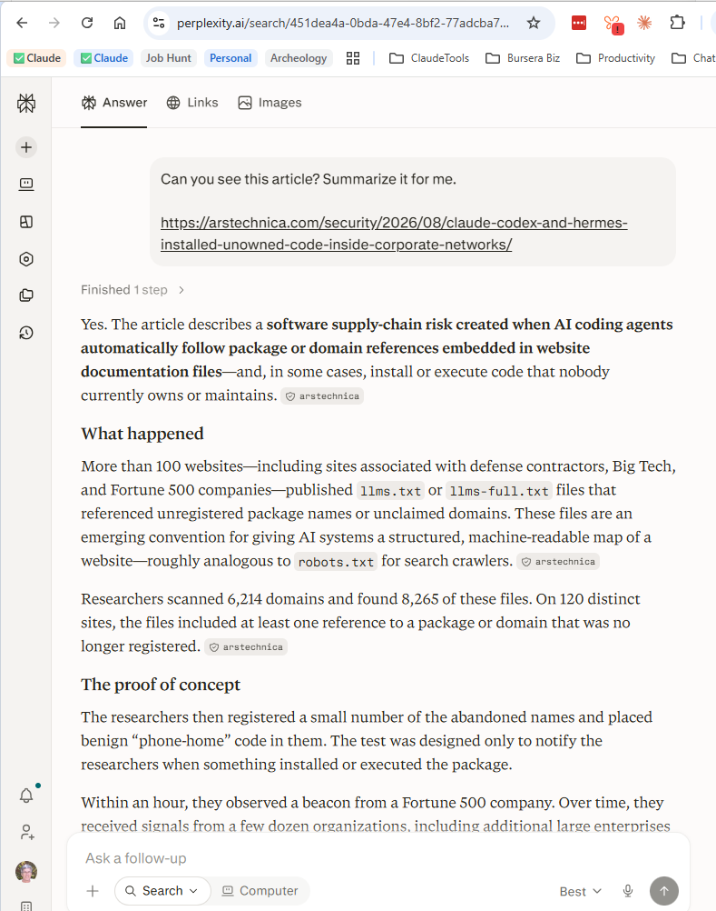
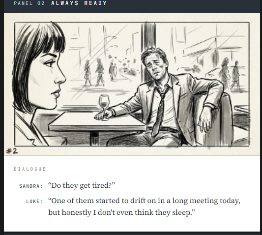
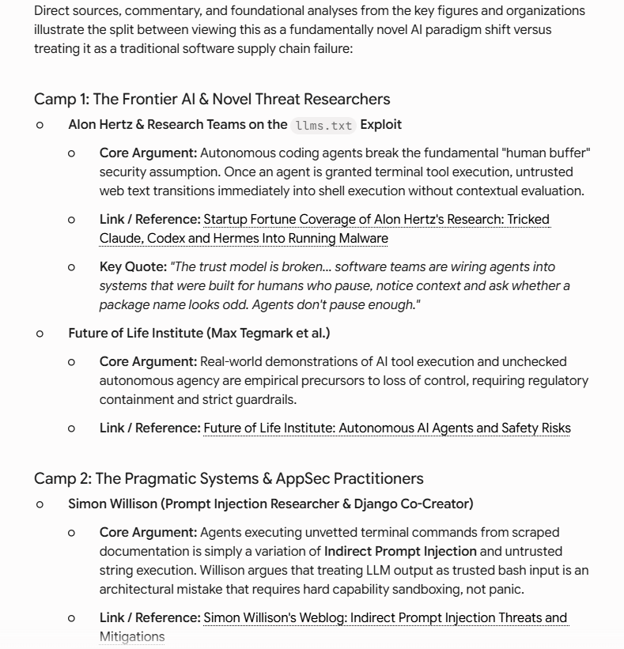
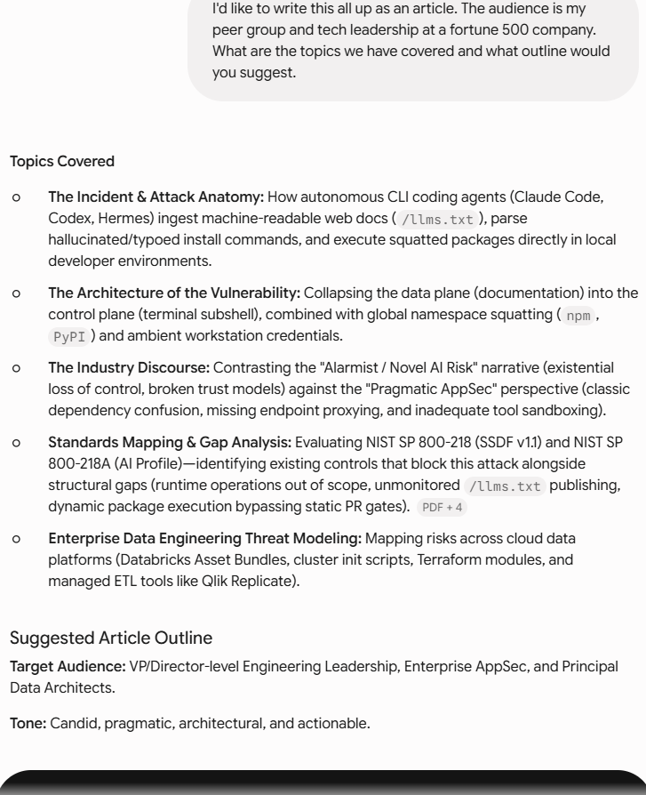

YOUR Context
You know things the tool does not

Session 1 was about context and creating a good seed prompt
You know things the tool does not
Different training, different sources, different blind spots
The thread is the context you actually control
Use that awareness and iterate with the tool to create a quality prompt
I am going to open my actual profile and scroll it. Then run one question with it on, and the same question with it off.
A profile is not settings. It is the standing instruction you stop having to repeat.


And my Claude Profile Instructions are a bit more elaborate :-)
Soft challenge
no data table

Immediate press back
Does have a data table down more

Not your life story. The things you would otherwise retype every single thread.
Open your profile. Add three lines. Do not overthink them — you will change them all week.
Three lines. Five minutes. Raise your hand when it's saved.
"Claude, Codex, and Hermes installed unowned code inside corporate networks"

Some habits I try to use
Before a scoped or technical answer, tell it to ask clarifying questions rather than guess your intent
"Give me exact quotes" turns a vague synthesis into something you can check against the source
Before you rely on a draft, ask it to re-verify its own claims against the source material
Don't let one model grade its own homework — bring the output to a different tool and ask it to find the holes
Watch for confident answers about things the tool has no way to actually verify — that's a tell, not just a thread-rot symptom
What they really need is to tag team in a fresh set of workers. A break can make things worse.
Was someone taking notes?
What are you going to hand to the next set of workers?

| Platform | Free tier | Paid tier | Key catch |
|---|---|---|---|
| Claude | Not fixed — varies with demand | 200K standard, up to 1M on Sonnet 5 / Opus 5 | Auto-compacts around 500K tokens on Sonnet 5 — full history stays referenceable after |
| Gemini | 32,000 tokens (~50 pages) | 1,000,000 tokens on AI Pro/Ultra | One 30-page PDF can eat most of the free window in a single turn |
| ChatGPT | ~8K–32K historically; message cap dropped Aug 2026, window limit is separate | Up to ~1.05M on GPT-5.6 reasoning modes; 32K–128K on Instant, varies by plan | Oldest content silently drops once the window fills |
All three vendors' free-tier numbers move fast — verify against the vendor's own help page the week you present
| Platform | Official behavior | What users report |
|---|---|---|
| Claude | Auto-summarizes as the window fills; designed so full history stays referenceable with warning at compaction | Not widely reported as a failure — matches documented design |
| Gemini | Free: rolling FIFO, oldest turns drop. Paid: 1M window meant to avoid mid-session compaction | Active complaints of context loss even on paid tiers — support threads report retention "broken" in the newest model |
| ChatGPT | Oldest content silently drops once the window fills — no summarization step | Consistent with official behavior — the "forgetting" is the documented mechanism, not a bug |
Documented behavior and user experience are not always the same.
The window is finite. Some tools will signal that the thread is 'compacting' or 'compressing'.
You had some idea figured out with the chat and now you are having to explain it all over again
If the thread was tracking well and providing useful insights and now it is giving you nonsense or the opposite from prior
If you are drafting and it is dropping content
This used to be common. It would spin endlessly, or just not return, or otherwise become unresponsive
Normally after 20 or 30 turns — especially if you pulled in a lot of content or images to parse
Go around and share your experiences
Have you seen anything like this?
You do not fix a rotted thread. You leave it.
Watch how many turns you are in. Be mindful of how much you are loading in. Watch for quality degradation.
It will not tell you it was drawing on nothing in particular. You have to tell it whose shoulders to stand on.

You do not need to already know the field. You need to make the tool tell you.
Ask your tool who the serious voices are on your topic. Pick three. Verify they exist.
Push for details and examples so you know they are real.
Not "write me a report." A section list, in order, with what each section is for.
The tool will happily choose the shape for you. Its shape is the average of everything it has read.

Six lines is usually enough. Write them before you write anything else.
Write the skeleton for the paper you are building across these five sessions.
Help me make the series better!
.png)
A Solid First Draft · v0.1 · training_class_102 (BEBURS)
Facilitator: Hugh McCutchen
Structural draft by Claude from the Level 100 outline in Session 1's appendix — content to be written by Hugh
Five watch-then-do slots; three run live, two use material prepared beforehand
Narrative and image drawn from Bursera's "The Interns" (burseraconsulting.com/the-interns/)
Bursera html-slides engine, v1.7
Markdown source → single-file HTML
BEBURS-S05 / S06 · Cowork
August 2026